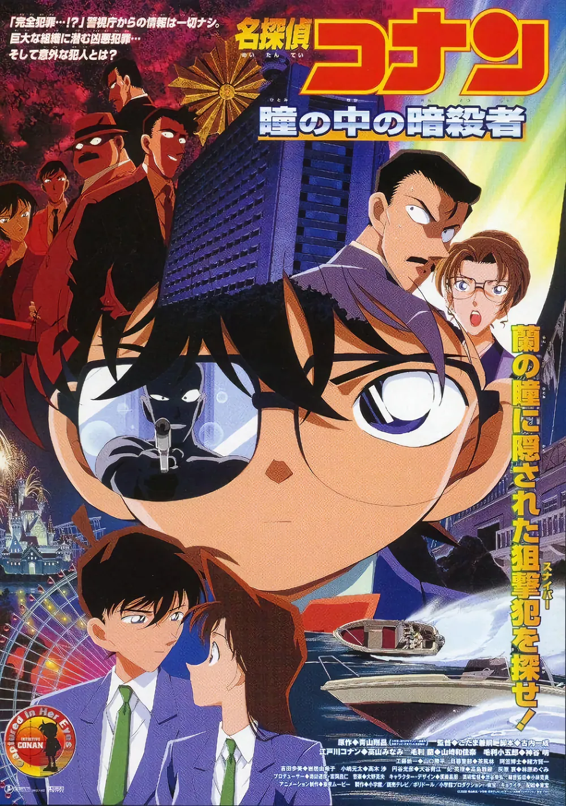

명탐정코난 : 눈동자 속의 암살자
방영 시기: 2000.4.22
국내 상영일:(투니버스)2008.8.25
비가 내리는 길을 걷고 있던 어린이 탐정단은 경시청에 근무하는 나라사와 오사무 형사와 만난다.
어린이 탐정단이 신호등이 깜빡일 때 건너려다가 그러면 안 된다고 혼내고는 가 버린다.
이후 그는 공중전화 박스에 들어가서 누군가에게 전화하고, 건너편 길가 전화 박스에서 나오다 수수께끼의 암살자에게 오토매틱 권총으로 3발을 저격당하고 빈사 상태가 된다.
그후 여러 형사들이 피격당하는 것으로 이야기가 전개된다.
25억 엔의 일본 수입
명탐정 코난 전체 극장판 중에서도 완성도가 높은 영화 중 하나로 평가받는다.
인기도 상당히 높은데 2020년 일본 코난 팬을 상대로 3기, 6기, 7기, 14기, 20기, 21기, 22기를 제외한 극장판 인기투표에서 1위를 해서 TV 방송이 성사되기도 했다.
기억상실증 등 기본 설정들은 진부한 점도 있으나 이를 코난이라는 장르에 걸맞게 활용해냈으며, 스토리와 연출이 후반부 이전까지는 실사 스릴러 영화를 방불케 할 만큼 아주 탄탄하다.
특히 이전이나 이후 극장판들과 달리 폭탄 폭발이나 대형 화재가 거의 등장하지 않는데, 중간에 베이카 선플라자 호텔에서 배전반을 망가뜨리기 위해 설치한 장치 이외엔 폭탄이 아예 없다.